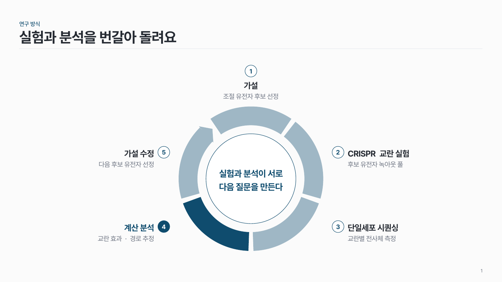
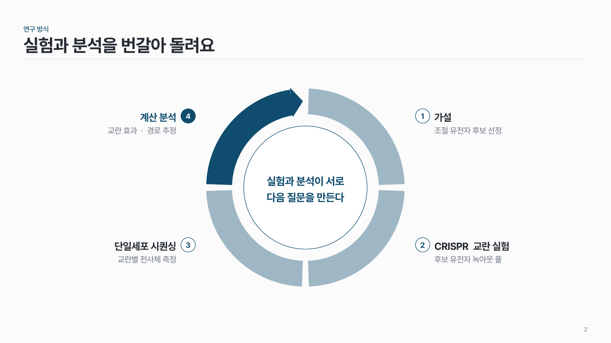
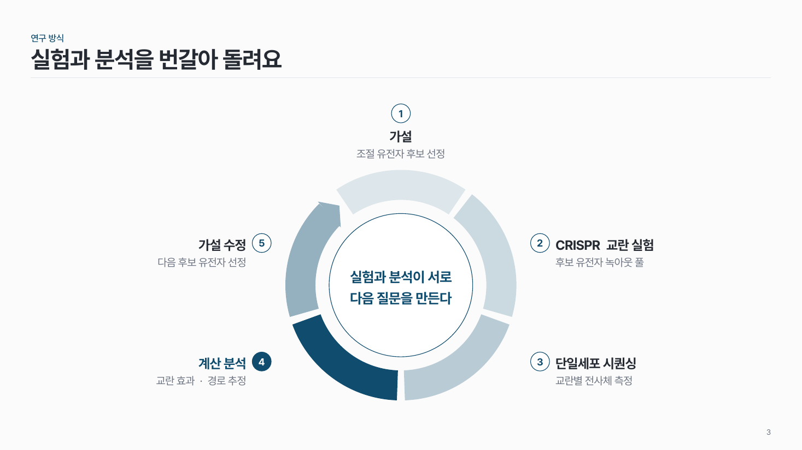

순환 링 flow-04
원을 단계 수만큼 조각내고, 조각 바깥에 단계를, 가운데 원에 전체를 아우르는 한 문장을 써요.

이 시안
5단계 · 가운데 메시지 · 핵심 조각
슬라이드 제목: 실험과 분석을 번갈아 돌려요
언제 쓰나
끝나지 않고 다시 처음으로 돌아가는 과정을 보여 줄 때요. 4–5단계가 한 바퀴 돌고, 가운데 한 문장이 전체의 의미를 말해 줄 때 잘 맞아요.
구성
- 링을 단계 수만큼 같은 크기로 조각내요. 조각 사이 틈은 모두 같게.
- 조각 바깥에 번호, 단계 이름, 한 줄 설명을 둬요.
- 링 안쪽 가운데 원에 핵심 메시지 한 문장을 써요.
- 방향은 마지막 조각 끝의 작은 화살촉 하나로만 보여 줘요.
지킬 것
- 단계는 4–5개.
- 단계 이름은 8자 안팎, 설명은 20자 안팎.
- 가운데 메시지는 두 줄 안팎.
- 핵심 조각 하나만 진하게, 나머지는 같은 색의 옅은 명도로.
하지 말 것
- 조각마다 화살표를 따로 달지 않아요.
- 6단계 이상을 한 링에 넣지 않아요.
- 실제로 되돌아가지 않는 과정을 링으로 그리지 않아요. 링은 "다시 처음으로"라는 뜻이에요.
PowerPoint에서
도형 > 기본 도형의 '막힌 원호'를 써요. 노란 조절점으로 시작·끝 각도와 두께를 바꿔요. 조각 하나를 만들고 복제한 뒤 '회전'으로 돌리면 틈이 같게 맞아요.
더 볼 게시물 Instagram @peedori_
시안 비교
같은 내용을 옵션만 바꿔 그렸어요. 그림을 누르면 크게 보여요.
A5단계 · 가운데 메시지 · 핵심 조각
슬라이드 제목: 실험과 분석을 번갈아 돌려요

B4단계
슬라이드 제목: 실험과 분석을 번갈아 돌려요

C5단계 · 조각 음영 그라데이션 · 핵심 조각
슬라이드 제목: 실험과 분석을 번갈아 돌려요